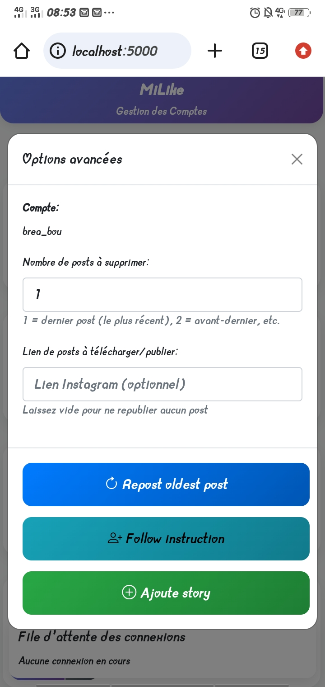

Présentation du projet
A small project that automates common Instagram actions for growth experiments and content management. Below you'll find a short screen recording of the tool in action and a screenshot of the admin interface.

Milike is a lightweight automation tool built to assist social media operators in scaling basic Instagram workflows. The project combines a small Python backend that interacts with Instagram endpoints (or a headless browser when needed) and a minimal web-based admin UI for scheduling and monitoring tasks.
This demo is intended for learning and experimentation. In a production context, platform policies and legal constraints must be respected and appropriate rate-limiting, error handling and credential security must be implemented.